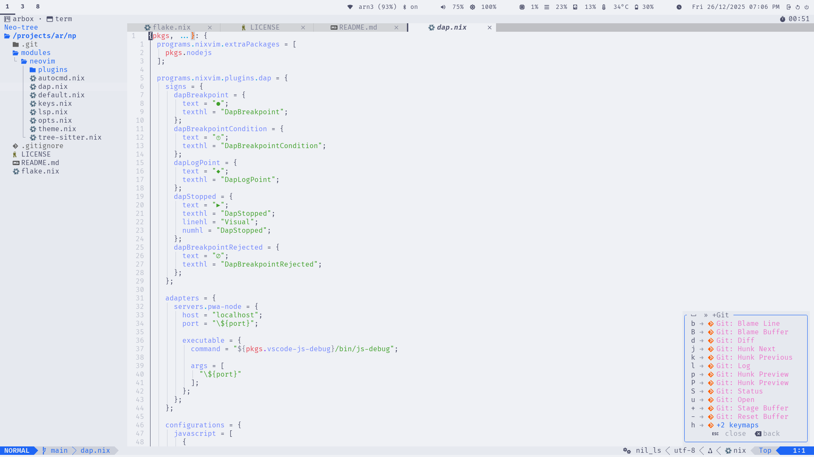
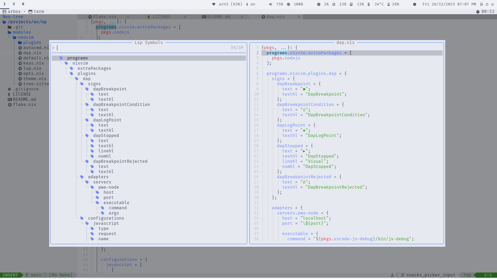
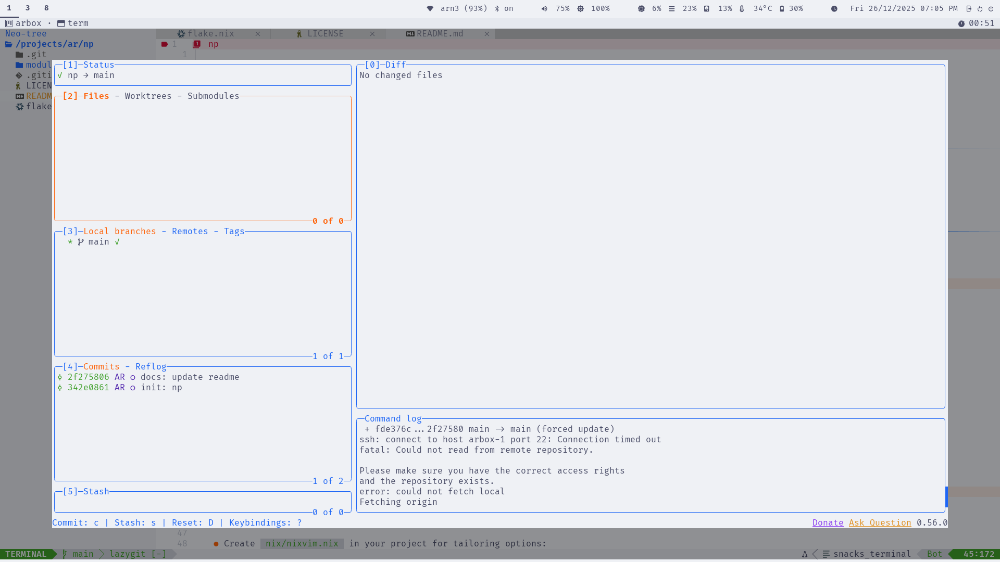

Default Experience
This page describes the out-of-the-box experience when using np without any
presets or customizations. It's the base NixVim configuration that provides a
complete, project-oriented Neovim setup.
Overview
np ships with a curated set of plugins, keybindings, and settings designed
for efficient development. The focus is on usability, discoverability,
and non-pollution—everything stays project-specific via Nix.
Key highlights:
- Leader Key: Space (
<Space>) - Theme: Catppuccin with full UI integration
- Session Management: Automatic save/restore for git repositories
- Completion: Blink.cmp with LSP integration
- Search: Snacks picker for fuzzy finding
- Diagnostics: Trouble for workspace issues, custom signs and virtual text
UI & Theme
The interface uses Catppuccin theme with integrations for a cohesive look.
- Status Line: Lualine with LSP status, git info, and diagnostics
- Buffer Tabs: Bufferline with close buttons and indicators
- File Explorer: Neo-tree sidebar with git status
- Notifications: Noice for command-line and messages
- Diagnostics Panel: Trouble for workspace-wide issues
- Key Hints: Which-key for discoverable bindings
Screenshots
Editor View

Which-Key

LSP

Lazygit

Language Support
LSP Servers
Out-of-the-box support for common config and markup languages:
- Lua: lua_ls (with inlay hints)
- JSON: jsonls
- Markdown: marksman
- Nix: nil_ls
- TOML: taplo
- YAML: yamlls
Diagnostics include custom signs (e.g., for errors) and virtual text with spacing.
Tree-Sitter Parsers
Syntax highlighting and folding for:
- bash, json, lua, markdown, nix, regex, toml, vim, vimdoc, yaml
Folding uses indent method with custom characters.
Keybindings
Bindings are grouped logically under <leader> (space). Use <leader>? or
Which-key to explore.
Core Categories
- Windows (
<leader>w): Navigation, resizing, splitting - Buffers (
<leader>b): Switching, deleting, pinning - Tabs (
<leader><tab>): New, close, navigate - Explorer (
<leader>e): Neo-tree toggle/reveal - Code/LSP (
<leader>c): Rename, actions, definitions, diagnostics - Search (
<leader>s): Files, buffers, grep, replace - Git (
<leader>g): Lazygit, hunks, blame, log - Notifications (
<leader>n): History, dismiss - Session (
<leader>sl): Load last session - Debugger (
<leader>d): Breakpoints, stepping, UI
Examples
<leader>sf: Search files<leader>cd: Go to LSP definitions<leader>gg: Open Lazygit<C-s>: Save file (insert/visual/normal modes)

Plugins
The base setup includes these enabled plugins (categorized):
Completion & LSP
- blink-cmp: Fast completion
- lsp: Core LSP support
- lsp-signature: Function signatures
- lsp-status: Status indicators
- navic: Breadcrumb navigation
UI & Navigation
- bufferline: Buffer tabs
- edgy: Window management
- lualine: Status line
- neo-tree: File explorer
- noice: Notifications
- trouble: Diagnostics panel
- web-devicons: Icons
- which-key: Key hints
Development Tools
- conform-nvim: Formatting
- dap, dap-ui, dap-view, dap-virtual-text: Debugging
- git-conflict: Merge conflict resolution
- gitsigns: Git hunks and blame
- lazydev: Lua development
- none-ls: Linting/formatting bridge
- toggleterm: Terminal integration
- treesitter: Syntax parsing
Utilities
- colorizer: Color previews
- emmet: HTML/CSS snippets
- grug-far: Search & replace
- markview: Markdown rendering
- mini: Collection of small plugins
- snacks: Picker, notifications, terminal
- ts-autotag: Auto-close tags
- ts-comments: Enhanced comments
Extra Plugins
- plenary-nvim: Lua utilities
- nvim-lsp-file-operations: LSP file ops
Session Management
For git repositories, np automatically:
- Saves session on exit (VimLeavePre) to
.nvim/session.vim - Restores session on start (VimEnter) if no files specified
- Handles Neo-tree windows properly
- Adds
.nvim/to.gitignoreif needed
This enables Project-Oriented Development—no global state, per-project persistence.
Customization
The base is designed to be extended:
- Add presets for language support (see Presets)
- Override NixVim options in your project's
nix/nixvim.nix - Disable unwanted plugins or add new ones
For example, to add Python support:
imports = [
inputs.np.nixvimModules.base
inputs.np.nixvimModules.presets.python
];
This keeps your setup clean and reproducible.